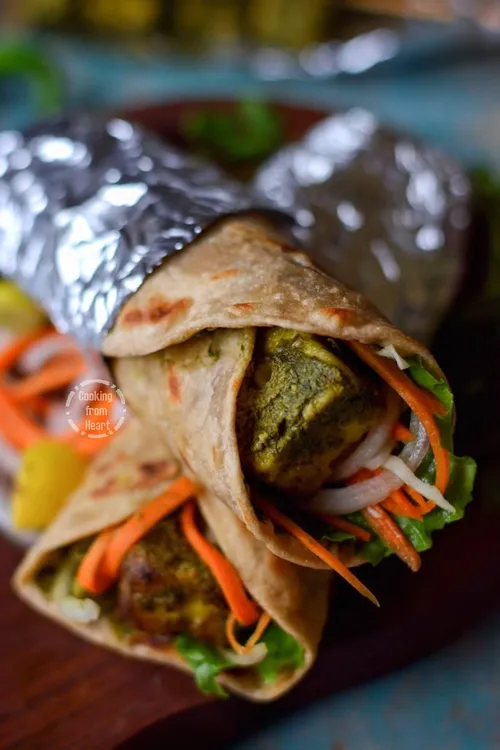

Panner Tikka Wrap
Description
It is nothing but tongue tickling spicy paneer tikka wrapped in chapati or
paratha. It is not only a different way of enjoying paneer tikkas with
routine paratha or chapati but also a healthy, stomach filling food that
can simply liven up your taste buds. Making paneer kathi rolls at home
involves three steps, 1. make spicy tikka for filling, 2. make chapati for
the wrap and 3. combine both into a stuffed wrap.
Ingredients
- 1 cup Paneer cubes
- 1/2 cup Green Capsicum (bell pepper), cut into chunks
- 1/3 cup Tomato, seeded and cut into 1-inch chunks
- 1 medium Onion, cut into 1-inch chunks (approx. 1/3 cup)
- 1/4 cup Thick Curd
- 1/2 teaspoon Ginger-Garlic Paste
- 1/4 teaspoon Corn Flour (or Gram Flour)
- 1/2 teaspoon Red Chilli Powder
- 1/8 teaspoon Garam Masala Powder
- 1/2 teaspoon Kasuri Methi (dried fenugreek leaves)
- 1 teaspoon Coriander Powder
- 1/4 teaspoon Chaat Masala Powder
- 1 tablespoon Oil
- Salt to taste
- 1 teaspoon Lemon Juice
- Roti
Steps
-
Take thick curd, corn flour, ginger-garlic paste, red chilli
powder, garam masala powder, kasuri methi, coriander powder, chaat
masala powder and salt in a large bowl.
-
Mix all ingredients to prepare a marinade.
-
Add paneer cubes, capsicum, tomato and onion. Mix gently to coat
them with marinade. Cover them with a plastic wrap or a lid and
place in the refrigerator for around 25-30 minutes.
-
Heat 1 tablespoon oil in a non-stick pan. Sauté marinated capsicum,
paneer, onion and tomato for 5 to 7 minutes over medium flame.
-
Turn off the flame, add lemon juice and mix well. Paneer tikka,
which will be used as stuffing, is ready. Divide it into 4-5
portions and proceed to make chapati which will be used as a wrap
for the rolls.
-
Cut onion into thin slices and sprinkle a little bit of chaat
masala powder over it.
-
Take one chapati and spread 1-2 teaspoons green mint chutney
evenly over it. If chapati is not hot, re-heat on tava for few
seconds before making the roll.
-
Put one portion of filling in the center and spread it lengthwise.
Add some sliced onion. Wrap the filling tightly with chapati and
make a roll. Wrap the roll halfway with aluminum foil and serve
with mint chutney and vegetable salad.
Go back